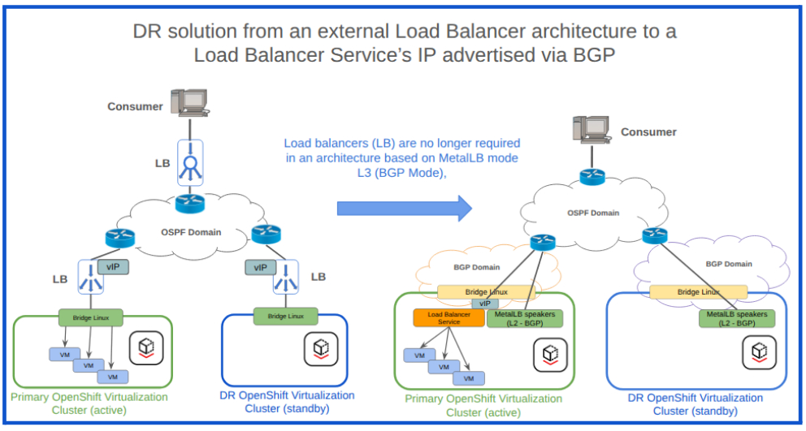
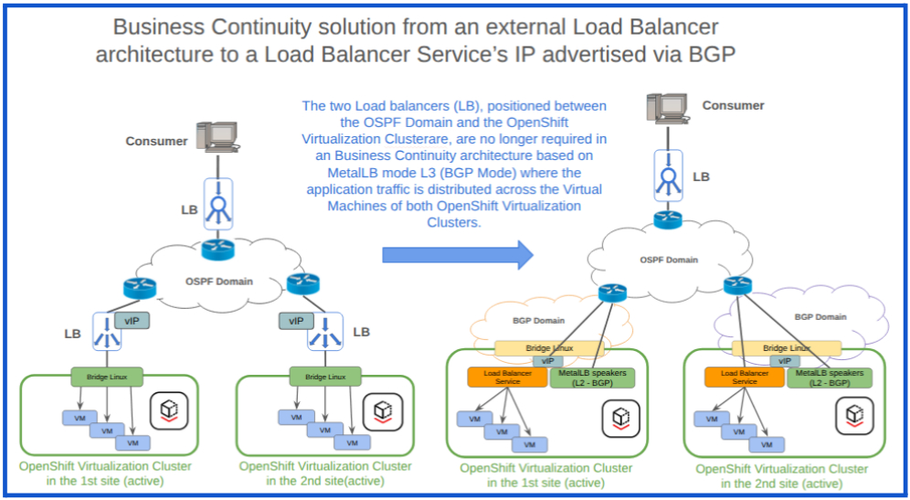
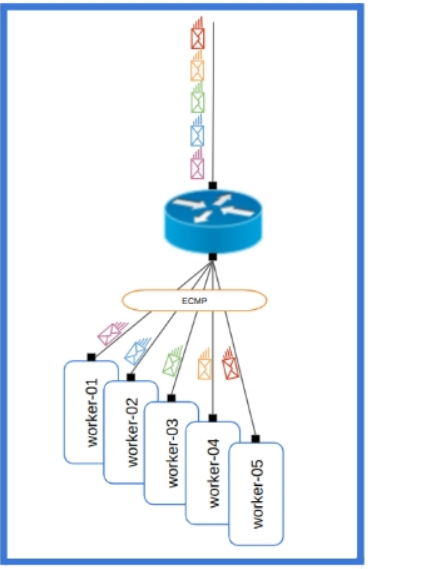
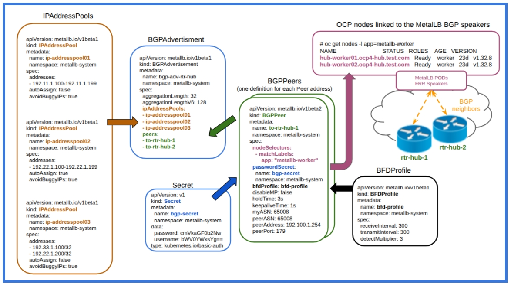
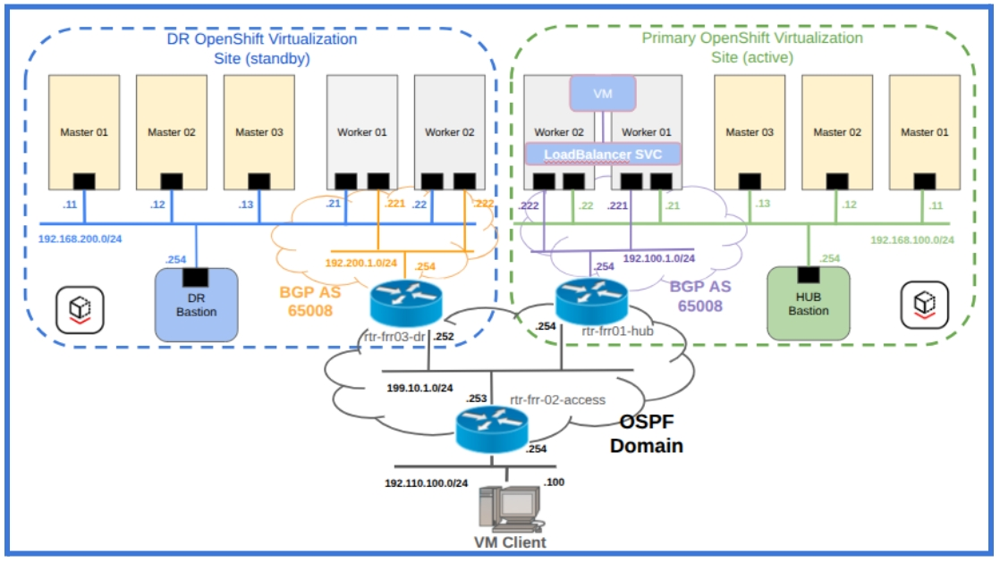

Implementing BGP Load Balancing infrastructure with MetalLB to support disaster recovery strategies in OpenShift Virtualization.
-
The objective of this Proof of Concept is to transition traffic routing intelligence from physical hardware to the software-defined network control plane.
-
By designating ExternalIPAddresses of the loadBalancer services (MetalLB Layer3) as BGP endpoints, the system can automatically re-route traffic in the event of site failures or service disruptions, thereby establishing a cost-effective and scalable framework for modern disaster recovery.
Contributors: _Riccardo Bruzzone (Senior Technical Accaunt Manager) and Daniele Nessilli (Technical Accaunt Manager)
1. Implementing BGP Load Balancing infrastructure with MetalLB to support disaster recovery strategies in OpenShift Virtualization.
1.1. MetalLB Layer 3 (BGP) as a foundational component.
-
The BGP loadBalancer insfrastructure utilizes MetalLB in Layer 3 (BGP) mode as a foundational component.
-
This approach leverages the reconvergence capabilities of the network infrastructure Control Plane, where the BGP protocol of the MetalLB in Layer 3 is enabled (Figure 1) and the accesses to the Virtual IP addresses of the applications are granted via loadBalancer service.
-
MetalLB in Layer 3 mode (BGP mode) within an OpenShift Virtualization Cluster enables the allocation of External IP addresses for OpenShift Load Balancer services connected to virtual machines (service’s endpoints).
|
This approach does not support VMs connected directly to customer VLANs where BGP advertisement occurs at the infrastructure level (e.g., on customer routers acting as the default gateway for those specific VLANs), rather than within OpenShift Virtualization. |
-
MetalLB advertises external IP addresses as Network Layer Reachability Information (NLRI composed by Network Prefix and Network Length) to the network’s control plane via BGP.
-
This feature facilitates the deployment of scalable, highly available network services, including those based on dual-stack (IPv4 and IPv6)."
-
The implementation of a Disaster Recovery architecture based on MetalLB in Layer 3 mode (BGP mode) offers a cost-effective alternative to traditional hardware load balancing solutions.
-
This approach leads to a significant reduction in the total cost of ownership of the infrastructure due to the following advantages:
-
The external load balancer (LB) is no longer necessary in the Disaster Recovery setup based on the BGP architecture (Figure 1).
-
This is because load balancing functionality is now managed by the OpenShift Load Balancer Services with external IP addresses, which are directly advertised through the BGP protocol of the MetalLB in Layer 3 mode.
-
The Load Balancers are no longer necessary for Disaster Recovery based on the BGP load balancer architecture (Figure 1).
-
In this scenario, the reachability of External IP addresses associated with the OpenShift Load Balancer Service is maintained through the reconvergence capabilities of the Network Control Plane.
-
-
The adoption of a Network Topology where the External IP Addresses assigned to the LoadBalancer Services and learned from the External BGP routers are redistributed, towards an Interior Gateway Protocol (OSPF in Figure 1), eliminates the complexities associated with the full mesh requirement of the iBGP protocol.
Figure 1 - Modernizing Disaster Recovery: from traditional Hardware Load Balancers to an Integrated, BGP load balancer architecture.

|
LB will remain relevant in Business Continuity architectures that require an RTO (Total Downtime) of zero. In such cases, different sets of IP Address Pools are assigned to the MetalLB of the OpenShift Virtualization Clusters to grant the scenarios where the VMs operate in an active-active mode (Figure 2) |
Figure 2 - Modernizing Business Continuity: from traditional Hardware Load Balancers to an Integrated, BGP load balancer architecture.

-
The MetalLB architecture in Layer 3 (BGP mode) relies on the FRR (FRRouting) suite to instantiate the BGP Speaker PODs in the designated nodes within Red Hat OpenShift Virtualization.
-
The objective of the MetalLB BGP Speakers is to advertise, to the external iBGP or eBGP peers (iBGP in this Proof Of Concept), the Network Layer Reachability Information (NLRI) related to the External IP addresses assigned to the LoadBalancer services.
Figure 3 - BGP Equal-Cost Multi-Path (ECMP)

-
The BGP Equal-Cost Multi-Path (ECMP) feature (Figure 3), which allows for the distribution of traffic across multiple equal-cost paths to the same destination, along with BGP’s failover capabilities, are critical components that enhance both the scalability and performance of a BGP solution.
-
Additionally, the reconvergence capabilities of routing protocols contribute significantly to the system resilience.
-
Bidirectional Forward Detection (BFD) plays a vital role in BGP performance by reducing the time required to detect network failures. BFD can identify failures within milliseconds, offering a substantial improvement over the standard keepalive timeout recommendations of 20 seconds specified in RFC 4271, with some third-party providers adopting longer timeouts such as 60 seconds.
-
The default configuration of the MetalLB BGP Speaker is to deny any Network Layer Reachability Information (NLRI) advertised by the BGP peers (external routers).
-
This posture presents a technical challenge regarding how to enable connectivity from internal endpoints behind the LoadBalancer services to remote subnets that are not directly connected to the Red Hat OpenShift Virtualization worker nodes.
-
The Network Address Translation (NAT) process implemented on the external router connected to the worker nodes of OpenShift Virtualization is one of the possible approaches for managing this type of network complexity (Figure 4) connected to the traditional Kubernetes networking where the MetalLB architecture in Layer 3 (BGP mode) speaker are involved.
-
An alternative approach for managing this complexity is available in this Red Hat blog post: Learning Kubernetes nodes networking routes via BGP
-
Implementing user-defined networks (UDNs) in Red Hat OpenShift Virtualization using Virtual Routing and Forwarding (VRF), advertising them via BGP with FRRouting speakers, and injecting learned BGP prefixes back into the VRF creates an adaptable solution that makes entire user-defined networks (UDNs) prefixes, not just LoadBalancer service IPs, directly reachable from the customers network infrastructure.
-
This topic, related to user-defined networks (UDNs) exposed via BGP routing protocol, is extensively discussed in this article: Exposing OpenShift networks using BGP
Figure 4 - Implementation of Network Address Translation to facilitate connectivity to remote subnets.

2. Administration of the MetalLB IPAddressPools and External IP Address advertisement via BGP.
2.1. Administration of the MetalLB IPAddressPools and External IP Address advertisement via BGP.
-
MetalLB can automatically allocate External IP addresses (IPv4 and IPv6), to OpenShift Virtualization services of type LoadBalancer, from any IP address pool where autoAssign is set to true (Figure 5).
-
MetalLB offers manual IP address assignment to enhance administrators' control over the allocation of external IP addresses for LoadBalancer services. Manual allocation of External IP Addresses (Figure 5) can be implemented by means of these configurations :
| Setting required for manual External IP allocation | Description |
|---|---|
|
Field to be added to the IPAddressPool’s spec planned for manual External IP allocation. The target of this field is preventing any automatic IP assignment from this pool. |
|
Annotation to be added to the OpenShift Virtualization Service and valorized with the name of the IPAddressPool planned as source for the manual External IP Allocation. |
|
Field to be added to the OpenShift Virtualization Service and valorized with the IP Address to be manually assigned to the service itself. |
-
The selection of the IP Address Pool (the source from which the External IP address will be assigned) can be influenced by other factors, as illustrated in this table:
| serviceAllocation fields | Description |
|---|---|
|
List of label selectors used to select specific namespace(s) for the IP pool. This serves as a flexible alternative to a static namespace list. |
|
A literal list of namespace(s) to which the IP pool can be attached. |
|
The priority assigned to the IP pool during the IP allocation process for a service. Higher priority pools are evaluated first. |
|
List of label selectors to select specific service(s) for which this IP pool can be used for IP allocation. |
Figure 5 - Service definition with some examples of manual and automatic External IP Address assignment.

-
The IPAddressPools must be included within the BGPAdvertisement object to enable the advertisement of Network Layer Reachability Information (NLRI), which consists of the Network Prefix and Prefix Length associated with external IP addresses assigned to LoadBalancer services.
-
The purpose of the BGPAdvertisement (Figure 6) is to establish a relationship between the IPAddressPools (specifically which External IP Addresses assigned will be advertised from each IPAddressPools) and the BGP peers (to which the External IP Addresses will be advertised) involved in the BGP sessions with the MetalLB speakers.
-
This configuration ensures that the External IP Addresses advertised as Network Layer Reachability Information to the BGP peers will be accessible from outside the OpenShift Virtualization cluster.
-
It is important to note that the Network Layer Reachability Information, connected to the External IP Addresses assigned to the LoadBalancer service, will only be advertised if at least one virtual machine is active and connected as an endpoint to the LoadBalancer service.
-
NLRI advertisement can be influenced by these BGAdvertisements fields:
| BGPAdvertisement fields | Description |
|---|---|
|
The aggregation-length advertisement option lets you “roll up” the /32s into a larger prefix. Defaults to 32. Works for IPv4 addresses. |
|
The aggregation-length advertisement option lets you “roll up” the /128s into a larger prefix. Defaults to 128. Works for IPv6 addresses. |
|
A selector for the IPAddressPools which would get advertised via this advertisement. If no IPAddressPool is selected by this or by the list, the advertisement is applied to all the IPAddressPools. |
|
The list of IPAddressPools to advertise via this advertisement, specifically selected by name. |
|
Allows limiting the nodes to announce as next hops for the LoadBalancer IP. When empty, all nodes in the cluster are announced as next hops. |
|
Limits the BGP peers to which the IPs of the selected pools are advertised. When empty, the LoadBalancer IP is announced to all configured BGPPeers. |
-
In a BGP network topology based on iBGP, where the local ASN matches the peer ASN (Figure 1), the behavior of the BGP protocol can be affected by both the BGP Peer configurations and the BFD Profile, as perceptible in the next two tables.
-
Please note that the BGPPeer Custom Resource (CR) contains the necessary information to establish a BGP session with a single peer.
-
To establish sessions with multiple external routers, it is necessary to define multiple BGPPeer CRs, as illustrated in Figure 6.
| Example of BGPPeer fields | Description |
|---|---|
|
The name of the BFD Profile to be used for the BFD session associated with the BGP session. If not set, the BFD session will not be established. |
|
Allows the BGP Peer to continue forwarding data packets along known routes while the routing protocol information is being restored. |
|
Requested BGP keepalive time, per RFC4271 (default: 60s). |
|
Requested BGP hold time, per RFC4271 (default: 180s). |
|
Requested BGP connect time; controls how long BGP waits between connection attempts to a neighbor (default: 120s). |
| Example of BFDProfile fields | Description |
|---|---|
|
The minimum interval (in milliseconds) that this system is capable of receiving control packets (default: 300ms). |
|
The minimum transmission interval (less jitter) that this system wants to use when sending BFD control packets (default: 300ms). |
|
Configures the detection multiplier to determine packet loss. The remote transmission interval is multiplied by this value to determine the connection loss detection timer (default: 3). |
|
Marks the session as passive. A passive session will not attempt to initiate the connection; it waits for control packets from a peer before it begins replying. |
Figure 6 - MetalLB in Layer 3 mode (BGB mode) - Object relationships and BGP speaker association with OpenShift Virtualization nodes.

3. Proof-of-Concept for BGP load balancer infrastructure to support Disaster Recovery for OpenShift Virtualization.
3.1. Proof-of-Concept for BGP load balancer infrastructure.
-
The infrastructure for this Proof-of-Concept is based on the network topology illustrated in Figure 7 and the configurations detailed in the addendum section located at the end of this document.
|
3.1.1. Initial situation:
-
The virtual machine rhel8-server is running on hub-worker01.ocp4-hub.test.com, first worker node of the primary OpenShift Virtualization cluster (Figure 7), exposing the HTTP and SSH services via 192.11.1.100/32 External IP address advertised via MetalLB Layer 3 (BGP mode) to the external rtr-frr01-hub router.
[root@hub-ocp-bastion-server ~]# oc get vm NAME AGE STATUS READY rhel8-server 14d Running True [root@hub-ocp-bastion-server ~]# oc get pod -o wide NAME READY STATUS RESTARTS AGE IP NODE NOMINATED NODE READINESS GATES virt-launcher-rhel8-server-prl2q 2/2 Running 0 66m 10.128.2.13 hub-worker01.ocp4-hub.test.com <none> 1/1
[root@hub-ocp-bastion-server ~]# oc get endpoints rhel8-server-01-manual-svc NAME ENDPOINTS AGE rhel8-server-01-manual-svc 10.128.2.13:80,10.128.2.13:22 3m23
[root@hub-ocp-bastion-server ~]# oc get services NAME TYPE CLUSTER-IP EXTERNAL-IP PORT(S) AGE headless ClusterIP None <none> 5434/TCP 29d rhel8-server-01-manual-svc LoadBalancer 172.30.145.246 192.11.1.100 22000:31214/TCP,22080:31217/TCP 3m16s
Figure 7 - Environment for Proof-of-Concept on BGP load balancer infrastructure to support Disaster Recovery for OpenShift Virtualization

-
Based on the MetalLB configuration implemented during the initial setup of the primary OpenShift Virtualization cluster (please refer to the supplemental configuration details provided at the end of this document), the BGP speakers are running on the worker nodes:
[root@hub-ocp-bastion-server ~]# oc get nodes -l app=metallb-worker NAME STATUS ROLES AGE VERSION hub-worker01.ocp4-hub.test.com Ready BGPspeaker,worker 29d v1.32.8 hub-worker02.ocp4-hub.test.com Ready BGPspeaker,worker 29d v1.32.8 [root@hub-ocp-bastion-server ~]# oc get pods -o wide | grep -E 'worker01|worker02' | sort -k 7 frr-k8s-zmqsf 7/7 Running 0 7m34s 192.168.100.21 hub-worker01.ocp4-hub.test.com <none> <none> frr-k8s-9jzl9 7/7 Running 0 7m34s 192.168.100.22 hub-worker02.ocp4-hub.test.com <none> <none>
-
Both MalLB BGP speaker are advertising the 192.11.1.100/32 External IP address as Network Layer Reachability Information (NLRI) to the rtr-frr01-hub, as demonstrated in the details below related to the BGP speaker running on hub-worker01.ocp4-hub.test.com:
#------------------------------------ frr-k8s-zmqsf ------------------------------#
# BGP summary and routes advertised
IPv4 Unicast Summary (VRF default):
BGP router identifier 192.168.100.21, local AS number 65008 vrf-id 0
BGP table version 1
RIB entries 1, using 192 bytes of memory
Peers 1, using 725 KiB of memory
Neighbor V AS MsgRcvd MsgSent TblVer InQ OutQ Up/Down State/PfxRcd PfxSnt Desc
192.100.1.254 4 65008 3994 3993 0 0 0 01:06:28 0 1 N/A
Total number of neighbors 1
# BGP advertised routes
BGP table version is 1, local router ID is 192.168.100.21, vrf id 0
Default local pref 100, local AS 65008
Status codes: s suppressed, d damped, h history, * valid, > best, = multipath,
i internal, r RIB-failure, S Stale, R Removed
Nexthop codes: @NNN nexthop's vrf id, < announce-nh-self
Origin codes: i - IGP, e - EGP, ? - incomplete
RPKI validation codes: V valid, I invalid, N Not found
Network Next Hop Metric LocPrf Weight Path
*> 192.11.1.100/32 0.0.0.0 0 100 32768 i
Total number of prefixes 1
# Route-map with OUT direction (to the external router)
ip address prefix-list 192.100.1.254-pl-ipv4
seq 1 permit 192.11.1.100/32
# Route-map with IN direction (from the external router)
ip address prefix-list 192.100.1.254-inpl-ipv4
seq 1 deny any
-
As a result of the Network Layer Reachability Information (NLRI) associated with the external IP address 192.11.1.100/32, which is advertised by the MetalLB BGP speakers, the router rtr-frr01-hub (connected directly to the worker nodes of the Primary OpenShift Virtualization cluster) will recognize two equal-cost paths to reach the prefix 192.11.1.100/32:
rtr-frr01-hub# show ip route bgp
Codes: K - kernel route, C - connected, L - local, S - static,
R - RIP, O - OSPF, I - IS-IS, B - BGP, E - EIGRP, N - NHRP,
T - Table, A - Babel, F - PBR, f - OpenFabric,
t - Table-Direct,
> - selected route, * - FIB route, q - queued, r - rejected, b - backup
t - trapped, o - offload failure
IPv4 unicast VRF default:
B> 192.11.1.100/32 [200/0] via 192.100.1.221 (recursive), weight 1, 01:21:15
* via 192.100.1.221, eth1 onlink, weight 1, 01:21:15
via 192.100.1.222 (recursive), weight 1, 01:21:15
* via 192.100.1.222, eth1 onlink, weight 1, 01:21:15
-
The prefix 192.11.1.100/32, learned via iBGP, will be sequentially redistributed by the rtr-frr01-hub router into the OSPF routing protocol and advertised to the rtr-frr02-access as an External E2 route.
rtr-frr02-access# show ip ospf database external
OSPF Router with ID (99.100.2.2)
AS External Link States
LS age: 153
Options: 0x2 : *|-|-|-|-|-|E|-
LS Flags: 0x6
LS Type: AS-external-LSA
Link State ID: 192.11.1.100 (External Network Number)
Advertising Router: 99.100.1.1
LS Seq Number: 80000001
Checksum: 0xe3db
Length: 36
Network Mask: /32
Metric Type: 2 (Larger than any link state path)
TOS: 0
Metric: 20
Forward Address: 192.100.1.221
External Route Tag: 0
rtr-frr02-access# show ip route ospf
Codes: K - kernel route, C - connected, L - local, S - static,
R - RIP, O - OSPF, I - IS-IS, B - BGP, E - EIGRP, N - NHRP,
T - Table, A - Babel, F - PBR, f - OpenFabric,
t - Table-Direct,
> - selected route, * - FIB route, q - queued, r - rejected, b - backup
t - trapped, o - offload failure
IPv4 unicast VRF default:
O>* 192.11.1.100/32 [110/20] via 199.10.1.254, eth0, weight 1, 00:02:49
O>* 192.100.1.0/24 [110/20] via 199.10.1.254, eth0, weight 1, 00:12:08
O 192.111.100.0/24 [110/10] is directly connected, eth2, weight 1, 00:12:55
O 192.168.150.0/24 [110/10] is directly connected, eth1, weight 1, 00:12:55
O>* 192.200.1.0/24 [110/20] via 199.10.1.252, eth0, weight 1, 00:12:08
O 199.10.1.0/24 [110/10] is directly connected, eth0, weight 1, 00:12:08
-
Performing a basic end-to-end test, “VM Client” acting as application consumer connected to the rtr-frr03-access router was able to connect to the HTTP test service hosted on the virtual Machine rhel8-server, which is currently running on hub-worker01.ocp4-hub.test.com (a worker node within the Primary OpenShift Virtualization cluster).
[admin@vm-server ~]$ tracepath -m8 192.11.1.100
1?: [LOCALHOST] pmtu 1500
1: rtr-frr02-access 0.448ms
1: rtr-frr02-access 0.240ms
2: rtr-frr01-hub 0.696ms
3: primary-ocp-worker02 1.214ms
…. omitted …
[admin@vm-server ~]$ curl -Is http://192.11.1.100:22080 | head -n 1
HTTP/1.1 200 OK
[admin@vm-server ~]$
3.1.2. Recovery prerequisite:
-
The availability of the latest full backup, or point-in-time (PIT) backups if applicable, of the virtual machine resources associated with rhel8-server stored externally from the primary OpenShift Virtualization cluster, along with the ability to restore these resources in the disaster recovery (DR) OpenShift Virtualization environment, is a prerequisite for this demonstration, as illustrated in Figure 8.
-
In this context, OpenShift-ADP was utilized to create a full backup of the rhel8-server virtual machine from the primary OpenShift Virtualization cluster and to restore it within the DR OpenShift Virtualization environment during the recovery process described below.
# cat backup-vm-bgp-datamover.yaml
apiVersion: velero.io/v1
kind: Backup
metadata:
name: vm-gvp-namespace-backup
namespace: openshift-adp
spec:
snapshotMoveData: true
includedNamespaces:
- vm-bgp
storageLocation: dpa-ocp-virt-1
[root@hub-ocp-bastion-server ocp-script-yaml-dr]# oc create -f backup-vm-bgp-datamover.yaml
backup.velero.io/vm-gvp-namespace-backup created
[root@hub-ocp-bastion-server ~]# velero backup get -n openshift-adp
NAME STATUS ERRORS WARNINGS CREATED EXPIRES STORAGE LOCATION SELECTOR
vm-gvp-namespace-backup Completed 0 0 2025-10-25 04:04:29 -0400 EDT 29d dpa-ocp-virt-1 <none>
Figure 8 - S3 Infrastructure to support Virtual Machine Backup & Restore via OpenShift APIs for Data Protection (OADP)

3.1.3. Primary cluster isolation:
-
After isolating the Primary OpenShift Virtualization environment (which involved disabling the external router interface, as indicated in Figure 9), the VM client experiences a loss of connectivity towards the external IP address of the virtual machine rhel8-server.
[admin@vm-server ~]$ tracepath -m8 192.11.1.100 1?: [LOCALHOST] pmtu 1500 1: rtr-frr02-access 0.527ms 1: rtr-frr02-access 0.352ms 2: no reply 3: no reply 4: no reply 5: no reply 6: no reply 7: no reply 8: no reply
-
The external IP address of the virtual machine rhel8-server will be accessible again once the restoration procedures are completed and the OSPF and BGP protocols have reconverged to direct traffic to the DR OpenShift Virtualization cluster.
Figure 9 - Virtual Machine fail over on DR OpenShift Virtualization Clusters

3.1.4. Restore process on DR cluster:
-
Following the completion of the restore process on the DR OpenShift Virtualization cluster, the virtual machine rhel8-server has been successfully restored and reassigned to the same external IP address previously utilized in the primary cluster:
# cat restore-vm-bgp-datamover.yaml
apiVersion: velero.io/v1
kind: Restore
metadata:
name: vm-gvp-namespace-restore
namespace: openshift-adp
spec:
backupName: vm-gvp-namespace-backup
restorePVs: true
[root@dr-ocp-bastion-server ~]# oc create -f restore-vm-bgp-datamover.yaml
restore.velero.io/vm-gvp-namespace-restore created
[root@dr-ocp-bastion-server ~]# velero get restores -n openshift-adp NAME BACKUP STATUS STARTED COMPLETED ERRORS WARNINGS CREATED SELECTOR vm-gvp-namespace-restore vm-gvp-namespace-backup Completed 2025-10-25 05:06:14 -0400 EDT 2025-10-25 05:13:23 -0400 EDT 0 15 2025-10-25 05:06:14 -0400 EDT <none>
[root@dr-ocp-bastion-server ~]# oc project vm-bgp Now using project "vm-bgp" on server "https://api.ocp4-dr.test.com:6443". [root@dr-ocp-bastion-server ~]# oc get vm NAME AGE STATUS READY rhel8-server 8m5s Running True [root@dr-ocp-bastion-server ~]# oc get service NAME TYPE CLUSTER-IP EXTERNAL-IP PORT(S) AGE headless ClusterIP None <none> 5434/TCP 9m49s rhel8-server-01-manual-svc LoadBalancer 172.31.111.216 192.11.1.100 22000:31214/TCP,22080:31217/TCP 9m49s
3.1.5. External IP address reachability restored:
-
Restoring the virtual machine objects in the Disaster Recovery OpenShift Virtualization cluster, the External IP Address 192.11.1.100/32 is now being re-advertised, this time towards rtr-frr03-dr (the router connected to the DR OpenShift Virtualization cluster).
rtr-frr03-dr# show ip bgp sum IPv4 Unicast Summary: BGP router identifier 99.100.3.3, local AS number 65008 VRF default vrf-id 0 BGP table version 4 RIB entries 5, using 640 bytes of memory Peers 2, using 47 KiB of memory Peer groups 1, using 64 bytes of memory Neighbor V AS MsgRcvd MsgSent TblVer InQ OutQ Up/Down State/PfxRcd PfxSnt Desc 192.200.1.221 4 65008 5907 5908 4 0 0 01:38:22 1 2 N/A 192.200.1.222 4 65008 5912 5915 4 0 0 01:38:17 1 2 N/A Total number of neighbors 2
rtr-frr03-dr# show ip route bgp
Codes: K - kernel route, C - connected, L - local, S - static,
R - RIP, O - OSPF, I - IS-IS, B - BGP, E - EIGRP, N - NHRP,
T - Table, A - Babel, F - PBR, f - OpenFabric,
t - Table-Direct,
> - selected route, * - FIB route, q - queued, r - rejected, b - backup
t - trapped, o - offload failure
IPv4 unicast VRF default:
B> 192.11.1.100/32 [200/0] via 192.200.1.221 (recursive), weight 1, 00:07:27
* via 192.200.1.221, eth1 onlink, weight 1, 00:07:27
via 192.200.1.222 (recursive), weight 1, 00:07:27
* via 192.200.1.222, eth1 onlink, weight 1, 00:07:27
-
The topology modification resulting from the restoration of virtual machine objects within the DR OpenShift Virtualization cluster has caused reconvergence of the OSPF instance operating on rtr-frr02-access.
-
The External IP Address is now accessible via the rtr-frr03-dr router connected to the DR OpenShift Virtualization cluster.
rtr-frr02-access# show ip ospf database external
OSPF Router with ID (99.100.2.2)
AS External Link States
LS age: 27
Options: 0x2 : *|-|-|-|-|-|E|-
LS Flags: 0x6
LS Type: AS-external-LSA
Link State ID: 192.11.1.100 (External Network Number)
Advertising Router: 99.100.3.3
LS Seq Number: 80000002
Checksum: 0x7cd9
Length: 36
Network Mask: /32
Metric Type: 2 (Larger than any link state path)
TOS: 0
Metric: 20
Forward Address: 192.200.1.221
External Route Tag: 0
rtr-frr02-access# show ip route ospf
Codes: K - kernel route, C - connected, L - local, S - static,
R - RIP, O - OSPF, I - IS-IS, B - BGP, E - EIGRP, N - NHRP,
T - Table, A - Babel, F - PBR, f - OpenFabric,
t - Table-Direct,
> - selected route, * - FIB route, q - queued, r - rejected, b - backup
t - trapped, o - offload failure
IPv4 unicast VRF default:
O>* 192.11.1.100/32 [110/20] via 199.10.1.252, eth0, weight 1, 00:00:30
O>* 192.100.1.0/24 [110/20] via 199.10.1.254, eth0, weight 1, 00:16:59
O 192.111.100.0/24 [110/10] is directly connected, eth2, weight 1, 00:17:46
O 192.168.150.0/24 [110/10] is directly connected, eth1, weight 1, 00:17:46
O>* 192.200.1.0/24 [110/20] via 199.10.1.252, eth0, weight 1, 00:16:59
O 199.10.1.0/24 [110/10] is directly connected, eth0, weight 1, 00:16:59
rtr-frr02-access#
-
After the network reconvergence and as the final outcome of the recovery process, the VM Client restores connectivity to the RHEL8 server operating on DR OpenShift Virtualization through the rtr-frr03-dr router (Figure 9):
[admin@vm-server ~]$ tracepath -m8 192.11.1.100
1?: [LOCALHOST] pmtu 1500
1: rtr-frr02-access 0.347ms
1: rtr-frr02-access 0.216ms
2: rtr-frr03-dr 0.709ms
3: dr-ocp-worker02 1.088ms
… omitted …
[admin@vm-server ~]$ curl -Is http://192.11.1.100:22080 | head -n 1
HTTP/1.1 200 OK
[admin@vm-server ~]$
4. Addendum: version, notes and configuration version related to this Proof-of-Concept.
4.1. Addendum.
| Infrastructure Elements | Components | Version | Notes and Configuration Details | ||
|---|---|---|---|---|---|
Primary OpenShift Virtualization |
Red Hat OpenShift |
4.19 |
Enable Global ipForwarding and routingViaHost: oc patch network.operator cluster --type=merge -p '{"spec":{"defaultNetwork":{"ovnKubernetesConfig":{"gatewayConfig":{"ipForwarding": "Global"}}}}}'
oc patch network.operator cluster --type=merge -p '{"spec":{"defaultNetwork":{"ovnKubernetesConfig":{"gatewayConfig":{"routingViaHost": true}}}}}'
labels assigned to the worker nodes for MetalLB: oc label node hub-worker01.ocp4-hub.test.com app=metallb-worker oc label node hub-worker02.ocp4-hub.test.com app=metallb-worker label assigned to the worker nodes for NMState: oc label node hub-worker01.ocp4-hub.test.com node-role.kubernetes.io/BGPspeaker="" oc label node hub-worker02.ocp4-hub.test.com node-role.kubernetes.io/BGPspeaker=""
|
||
LocalStorage / OpenShift Data Foundation / OpenShift Virtualization Operators |
4.19 |
Standard operator stack for storage and virtualization. |
|||
OADP Operator |
1.5.2 |
||||
NMState / MetalLB Operators |
4.19 |
||||
DR OpenShift Virtualization |
Red Hat OpenShift |
4.19 |
Enable Global ipForwarding and routingViaHost: oc patch network.operator cluster --type=merge -p '{"spec":{"defaultNetwork":{"ovnKubernetesConfig":{"gatewayConfig":{"ipForwarding": "Global"}}}}}'
oc patch network.operator cluster --type=merge -p '{"spec":{"defaultNetwork":{"ovnKubernetesConfig":{"gatewayConfig":{"routingViaHost": true}}}}}'
labels assigned to the worker nodes for MetalLB: oc label node dr-worker01.ocp4-dr.test.com app=metallb-worker oc label node dr-worker02.ocp4-dr.test.com app=metallb-worker label assigned to the worker nodes for NMState: oc label node dr-worker01.ocp4-dr.test.com node-role.kubernetes.io/BGPspeaker="" oc label node dr-worker02.ocp4-dr.test.com node-role.kubernetes.io/BGPspeaker=""
|
||
LocalStorage / OpenShift Data Foundation / OpenShift Virtualization Operators |
4.19 |
Standard operator stack for DR site. |
|||
OADP Operator |
1.5.2 |
||||
NMState / MetalLB Operators |
4.19 |
||||
Router & Network Services |
FRRouting (Hub/Access/DR) |
10.4.1 |
|||
dhcp-server |
4.4.2 |
RHEL 9 package (4.4.2-19.b1.el9.x86_64) |
|||
firewalld |
1.3.4 |
RHEL 9 package (1.3.4-9.el9_5.noarch) |
|||
External S3 Storage |
Red Hat Ceph Storage (Single Node) |
N/A |
Ceph utilized as S3 backend for OADP. |